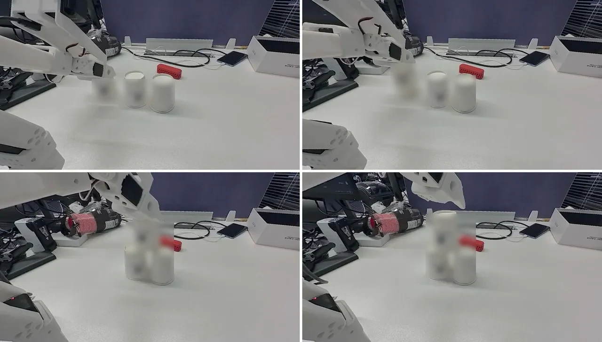
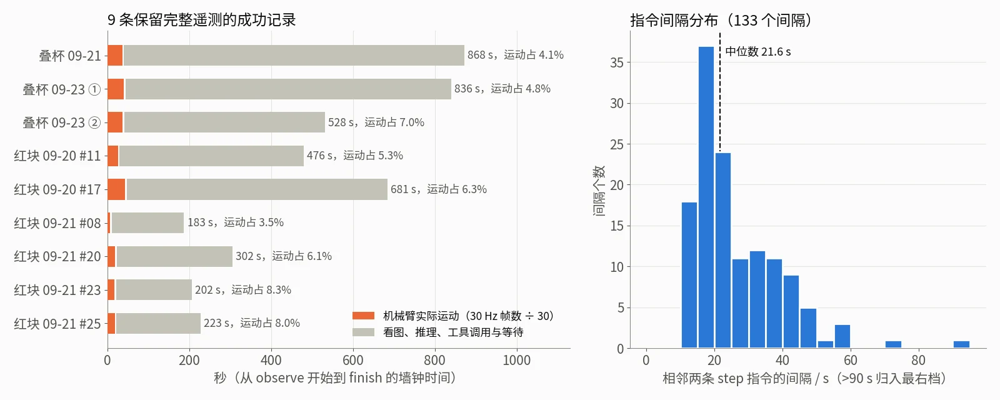
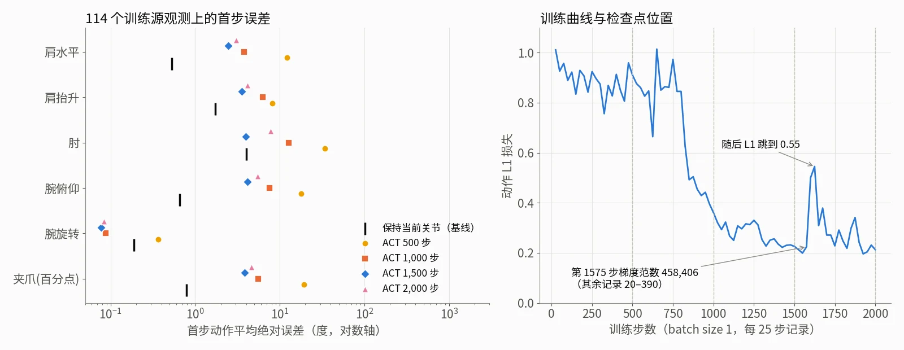

大模型操控 SO101 机械臂
我把 Codex（基于 GPT 的编程智能体）接上一台 SO101 机械臂和两路相机，让它自己看图、规划、下发关节目标，在真机上闭环完成红块入箱和叠纸杯。成功轨迹再交给 ACT 模仿学习，目标是“大模型纠偏、小模型执行”。
- 红块入箱、叠纸杯的真机成功记录
- 20 + 15 条
- 机械臂真正在动的时间占比
- 3.5–8.3%
- 做什么
- 让大模型智能体直接操控真机械臂，完成桌面抓放
- 我做的
- 搭建常驻控制进程和双相机链路、设计技能树与复盘格式、把智能体的成功轨迹整理成 ACT 训练数据
- 技术栈
- Codex · LeRobot 0.6.1 · ROS 2 · ACT · 双路 RGB
- 任务
- 红块入箱 20 条、叠纸杯 15 条成功记录；叠 T 恤 7 次全部失败
- 关键发现
- 大模型能靠看图完成真实抓放，但慢：机械臂真正在动的时间只占 3.5–8.3%，两条指令之间中位隔 21.6 秒。所以下一步是把它的成功经验蒸馏给本地小模型。
- 目前进展
- 大模型控制下两项任务都已跑通；ACT 只做到离线拟合，还没有自主上机成功。
方法一览
| 名称 | 是什么 / 怎么工作 | 输入或条件 | 出处 |
|---|---|---|---|
| Codex | 基于 GPT 大语言模型的编程智能体：能读图、读文件、调用命令行工具。这里它通过工具调用读双图和关节状态，输出下一步关节目标和理由 | 两张 RGB 图、六维关节读数、任务描述和经验文档 | 现成产品，未微调 |
| 常驻控制进程 | 我写的长驻进程，独占舵机串口和相机，把机械臂包成 observe / step / finish 三条 JSON 指令，同时按 30 Hz 录制 episode | 绝对关节目标、时长、技能节点、理由 | 本项目 |
| 技能树 | 把任务拆成复合技能 → 原子技能 → 基础接口，每一步动作标记所属节点，失败时定位到具体环节 | 人工定义的任务结构 | 参考 RoboRSI |
| ACT（Action Chunking with Transformers） | 模仿学习策略：图像经 ResNet 编码，与关节状态一起送入 Transformer，一次预测未来一段动作（动作块）；训练时带一个条件变分自编码器（CVAE）吸收示范里的多样性 | 双路 RGB + 六维关节状态；成功示范 | Zhao 等，2023 |
action_is_pad | ACT 训练时的掩码：动作块里标记为填充的步不计入损失 | 每个样本一条布尔向量 | LeRobot 的 ACT 实现 |
| “保持当前关节”基线 | 不学习，直接把当前测得的关节角当作下一步动作；用来判断模型是否学到了比“不动”更多的东西 | 当前关节读数 | 本项目评估用 |
| MAE（平均绝对误差） | 预测动作与示范动作差值绝对值的平均，关节单位为度，夹爪为开合百分点 | 同一批观测 | — |
给大模型一双眼睛和一只手
大模型不能直接驱动舵机。常驻控制进程把机械臂包装成三条 JSON 指令：observe 返回腕部和外部两张图、六个关节的实际角度、按 URDF 算出的末端位置和肘弯角，以及健康状态；step 接收绝对关节目标、时长、所属技能节点和这一步的理由，分段执行后再返回双图和反馈；finish 结束并保存整条 episode。每条指令的请求值、实际下发值和反馈值都写进遥测。
两路相机分工明确：腕部相机（叠杯配置下 544 × 640）看夹爪和物体的接触细节，固定的外部相机（960 × 544）看离桌高度、障碍物和撤离路径。只用 RGB，不用深度、IMU 或双目测距；两路曝光不同步，外部相机外参也没有标定，所以“离桌多高”靠看图判断，不靠几何计算。
- 眼睛腕部 RGB + 外部 RGB
- 手常驻控制进程：observe / step / finish
- 脑Codex 读图、选关节目标、写理由
任务组织参考 RoboRSI 的技能树：桌面操作 → 摆底座、叠上杯、入箱等复合技能 → 观察、抓取、搬运、放置、撤离等原子技能 → 相机、运动、几何、策略建议等基础接口。
看一步，走一步
智能体按四种职责推进：Manager 选任务、排修订队列；Planner 读当前画面，确定物体和阶段；Engineer 下发动作，必要时改代码；Reviewer 看执行后的连续图像，判断成功或失败，定位最早出问题的节点。四种职责由同一个 Codex 会话轮流承担。
- 观察双图 + 关节反馈
- 决策确定这一阶段的关节目标
- 执行分段运动，记录实际轨迹
- 复看对照画面与反馈，修正或进入下一阶段
关节反馈是判断“动作有没有真的到位”的依据：
| 场合 | 目标 | 实际反馈 | 判断与修正 |
|---|---|---|---|
| 叠杯首次抬升，肩关节 | −32.95° | −26.42° | 差 6.54°，侧视画面显示杯子没离桌；加大抬升后杯子才被提起 |
| 红块抓取，夹爪开合 | 16.00% | 18.15% | 把保持目标放宽到 17.35%，目标与反馈的差从 2.15 缩到 0.80 个百分点，舵机不再一直追更小的开合量 |
| 叠杯抓取，夹爪开合 | 40% | 约 41.73% | 不调整；靠杯体离桌、随爪移动、释放后成塔确认抓牢 |
两项任务
红块入箱
沿红块长轴找中点夹取，确认离桌，整块越过箱沿，箱内松爪，高位撤离。难点是对中、越障和撤离时别把箱子带走。

叠纸杯
把一只倒扣的纸杯叠到另外两只上面。比红块难：杯子高、壁薄，低位侧向接近容易把杯子推走；放置时杯口要同时跨在两只杯子上。最终改为从杯身上侧夹持，借外部侧视确认接触和落位。


| 项 | 红块入箱 | 叠纸杯 |
|---|---|---|
| 抓取点 | 长轴中点 | 杯身上侧 |
| 主要风险 | 夹到尾部、撞箱沿、撤离带动箱子 | 低位接近推走杯子、杯体倾斜、落位偏心 |
| 成功判据 | 红块留在箱内，箱体不动 | 源杯松开后由两只支撑杯托住，撤离后三杯稳定 |
| 外部相机的作用 | 看离桌高度与箱沿净空 | 侧视看接触、离桌和杯口落位 |
累计红块入箱 20 条、叠纸杯 15 条成功示范。每次尝试保存任务计划、每一步的决策理由、遥测和双图证据。实验之间由我摆回物体；任务中的每一步运动都由 Codex 调接口下发，不是我遥控。
翻车与经验
早期失败几乎都有一个共同点：局部动作看起来完成了，但物体或路径并不满足任务。夹了红块尾部、抬得不够高撞箱沿、收臂时把箱子带走、接近纸杯时把杯子推走。每次复盘后，可迁移的规则写进经验文档，下一轮读取：
- “对准”不等于“夹住”。杯口在腕部画面居中、俯视投影重叠、夹爪闭到目标开度，都不能证明杯壁在两指之间。必须看物体是否随夹爪离桌。
- 历史成功姿态只是参考。物体被复位后位置会变，直接回放旧关节角会空抓，每次都要按当前画面重新定位。
- 净空按物体最低点算。只看末端坐标会低估碰撞，越障要看整只夹爪和物体底部。
- 相机摆位比数量重要。早期也有两路相机，但关键接触区被同时遮挡，夹爪照样推走杯子。调整外部相机后，侧面接触才看得清。
| 环节 | 只有腕部相机时 | 加固定外部相机后 |
|---|---|---|
| 抓取对中 | 物体被指爪遮挡，局部轮廓让中心估计偏移 | 外部视角看完整物体与夹爪，腕部补近距离接触 |
| 离桌与越障 | 相机随臂运动，高度变化和透视变化混在一起；抬升后箱子可能出画 | 固定侧视同时保留桌面、物体最低点和箱沿 |
| 箱内释放 | 平视画面被箱壁遮挡 | 腕部俯视箱内，固定视角看箱体是否移动 |
| 叠杯与撤离 | 难以同时看到杯塔和退出路径 | 外部视角持续看支撑状态、指尖分离和高位退出 |
瓶颈在思考，不在电机


133 个指令间隔的中位数是 21.6 秒，10% 和 90% 分位分别是 14.1 秒和 43.2 秒；9 条成功记录里机械臂真正在动的时间只占 3.5–8.3%。两个代表性例子：
- 红块 #25 · 动作
- 17.7 s
- 红块 #25 · 总计
- 222.8 s
- 叠杯 · 动作
- 36.0 s
- 叠杯 · 总计
- 782.6 s
本地 ACT 推理一次（热机）的中位数是 45 ms（P95 52 ms，只含模型前向和反归一化），比一次大模型决策快约 480 倍。这就是把大模型的经验交给小模型的理由：小模型负责连续执行，大模型只在接触、越障和环境变化时介入。
把经验交给 ACT
智能体每次成功都留下一条完整 episode：双路 RGB、六维关节与夹爪状态、实际下发的动作。我用其中两条叠杯成功轨迹在 LeRobot 上训练双 RGB 输入的 ACT。
| 项 | 取值 |
|---|---|
| 数据 | 2 条叠杯成功轨迹，原始 2,303 帧，采样后 2,153 帧 |
| 动作块长度 / 每次执行步数 | 16 / 1 |
| 视觉骨干 | ResNet-18，随机初始化 |
| 参数量 | 1,555 万 |
| batch size / 步数 / 学习率 | 1 / 2,000 / 1×10⁻⁴ |
| 动作块截断 | 相邻动作间隔 > 0.25 s 或跨越指令边界即屏蔽；终点保持保留 15 帧 |
整理数据时发现一个坑：其中一条轨迹中途因舵机温度暂停了约 186 秒。按帧号连续取 16 步，会把暂停前的“保持”和恢复后的“释放”拼成一个现实里不存在的跳变。所以按控制段和时间间隔截断动作块，越界的步用 action_is_pad 屏蔽，不计入损失。


| 检查点 | 肩水平 | 肩抬升 | 肘 | 腕俯仰 | 腕旋转 | 夹爪 | 肘最大误差 |
|---|---|---|---|---|---|---|---|
| 保持当前关节（基线） | 0.52 | 1.72 | 4.05 | 0.65 | 0.19 | 0.78 | — |
| ACT 500 步 | 12.09 | 8.17 | 33.87 | 17.97 | 0.37 | 19.32 | 111.1 |
| ACT 1,000 步 | 3.77 | 6.24 | 12.65 | 7.55 | 0.09 | 5.58 | 69.9 |
| ACT 1,500 步 | 2.46 | 3.57 | 3.97 | 4.12 | 0.08 | 3.81 | 18.1 |
| ACT 2,000 步 | 3.04 | 4.13 | 7.84 | 5.45 | 0.08 | 4.65 | 33.3 |
- 1,500 步最好，2,000 步变差。1,500 步在每个关节上都比 2,000 步低。训练日志里 1,500 步之后（第 1,575 步）出现一次梯度范数尖峰，约 45.8 万，其余记录在 20–390 之间；随后 L1 损失从 0.22 跳到 0.55。batch size 只有 1，单个样本就能把一次更新带偏。
- 多数关节仍不如“不动”。1,500 步只在肘（3.97° 对 4.05°）和腕旋转上略好于基线，肩、腕俯仰和夹爪都更差，肘的最大误差还有 18.1°。
- 结论。两条轨迹不够，视觉骨干还是随机初始化。ACT 现在只作为只读的动作建议，不自动执行，由 Codex 看图后决定是否采用。
局限与下一步
- 太慢。9 条成功记录里，红块一次 3–11 分钟，叠杯 9–15 分钟。下一步把稳定的分段流程固化成本地函数，大模型只在关键节点判断。
- 小模型还没学会。先换 ImageNet 预训练的视觉骨干、补多位置示范，让 ACT 提动作、Codex 纠偏，把纠偏后的轨迹继续变成训练数据，再用独立场景比较成功率。
- 柔性物体不行。叠 T 恤试了 7 次都没成功：夹爪闭合、短抬后布料不随动。需要先制造可夹的布边，或换夹持方式。
- 还要人复位。每次尝试之间由我摆回物体，还谈不上连续自主运行。
- 换一套技能对照。正在用一套开源的机器人操作技能库走 real → sim → real：先在 MuJoCo 里按实测几何建模、仿真抓放，再回到真机，对比它和我自己这套流程的效果。